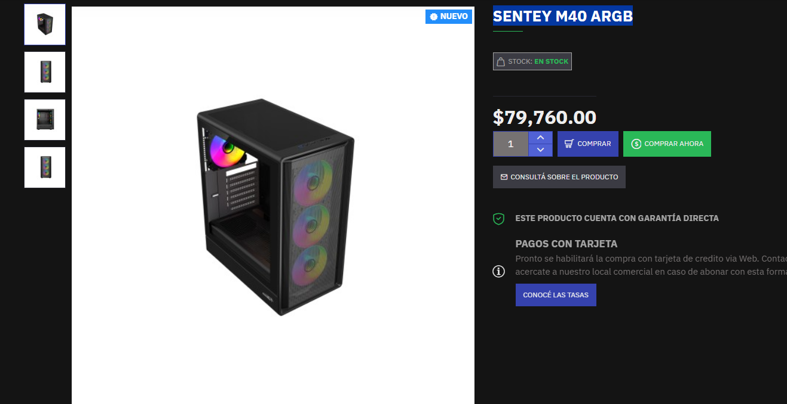
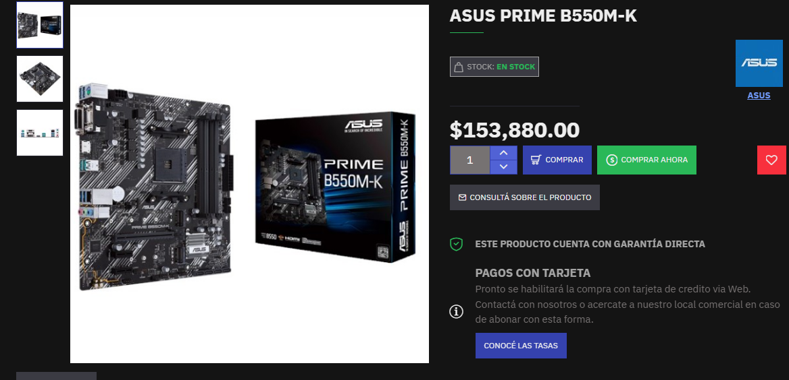
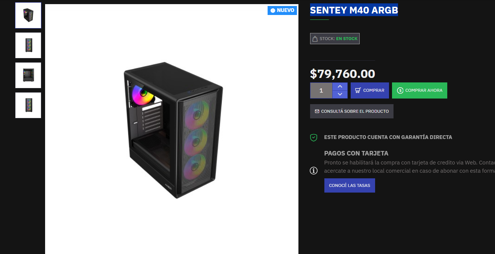
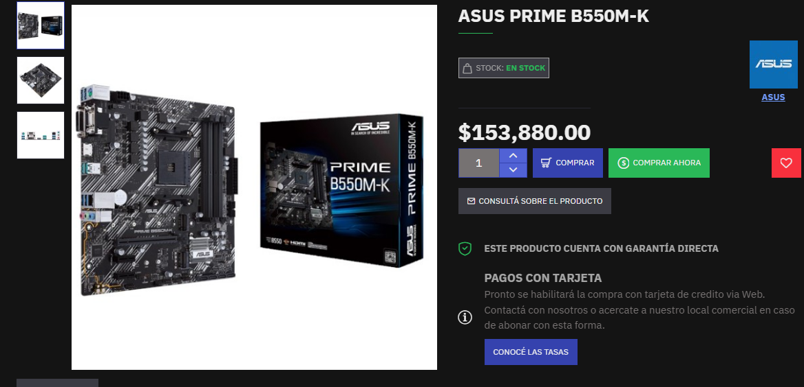

Parte de Santos:
Según la inteligencia artificial Copilot, esta fue la PC recomendada:

Y estos son los periféricos recomendados, según esta misma IA:

Según la inteligencia artificial Chat gpt, esta fue la PC recomendada:

Por lo tanto, según mi criterio, esta fue la pc que elegí, de forma que se adapte a mi presupuesto:

El presupuesto lo saque de las siguientes páginas: https://ecommerce.paranahardware.com.ar, y https://fullh4rd.com.ar/
Esta pagina corresponde a una casa de computacion de Paraná.
El presupuesto total de la pc es de $1.039.760, o 707,80 dolares a precio del 17/9/2025.
El precio de cada componente es el siguiente:
VIDEO GeForce RTX 3050 8GB MSI VENTUS 2X XS OC: $402.800
AMD Ryzen 5 5500: $161.290
FuenteAdata XPG Probe 600W 80+Bronze: $91.620
CRUCIAL BX500 SSD 500GB: $62.220
Asus Prime B550M-K: $153.880
HIKSEMI ARMOR 8GB DDR4 3200MHz (x2): $43.340 cada una
Gabinete Sentey M40 ARGB: $79.760
A continuación, adjunto los precios sacados de la página:
 


